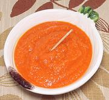

|
Chili Sauce - DIYCalifornia & Everywhere | ||||
| Makes: Effort: Sched: DoAhead: |
16 oz ** 30 min Yes |
This is a general recipe for making your own Chili Sauces. Hotness and Flavor will vary in the extreme, depending on the chilis you choose to use. | |||
|
1 3/4 to 1 3/4 to 1 4 |
# c T oz |
Chilis, Fresh (1) Vinegar (2) Salt Red Onion (3) |
Make - (30 min)
|